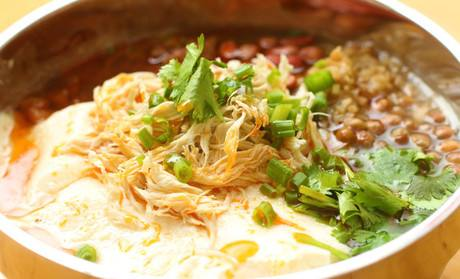
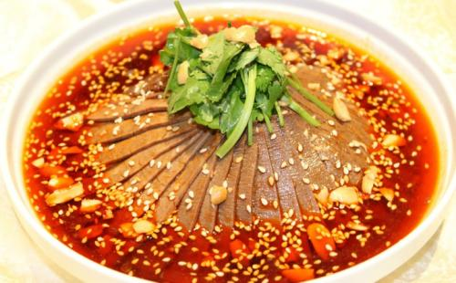

在重庆呆了那么多年，对于重庆的美食，是相当赞许的，重庆人很豪爽，对于吃，他们也有自己的风格特色，辣要辣的够爽，麻要麻得的够劲，话不多说，先给大家介绍几个我比较喜欢的重庆美食吧。
抄手类似于饺子，馄饨。我也这样理解的，它是一道用馄饨皮包的饺子的面食。个大，皮薄，馅多。这里的小店大都是自家纯手工包的，有的甚至皮都是自家擀的皮。
吴抄手，是一个店名。里面卖的主要是些经济实惠的重庆小吃，有抄手，春卷，锅贴，冰粉，糍粑，蒸饺，油茶……
说实话，我个人觉得这里店里的东西都好吃，做得很用心，分量也很足。别的店家煮面食之类的都是兑点高汤料，或清水煮熟再加的味精鸡精，调料什么的。吴抄手他们家，确实是真真的拿鸡来熬汤底，煮出来的面也好，抄手也好，又香，汤也很好喝。

鸡丝豆花是一道“慢工出细活”的菜式
首先将鸡全身扒皮，找到鸡胸骨，用刀剔下鸡胸两边的胸脯肉，一只大一点的鸡，估计能剔下二两胸脯肉，其余的肉均不能够达到做鸡丝的品质。
然后将清水煮熟的西红柿剥皮，菜刀剁碎，加小米椒，用菜油炙好，直至西红柿把菜油染得鲜红，这时候便可以加入熬制了几小时的筒子骨或鸡骨汤，入味后放入鸡丝、豆花捣碎，直到入味起锅即可。

棒棒鸡，又名“嘉定棒棒鸡”、“乐山棒棒鸡” [1-3] 。此菜起源于乐山汉阳坝（今为眉山市青神县汉阳镇） [2-3] ，取用良种汉阳鸡，经煮熟后，用木棒将鸡肉捶松后食用。棒棒鸡是四川特色菜肴。属于川菜中的凉菜，主要食材是鸡肉，其味型属于“怪味”，麻、辣、酸、甜、鲜、咸、香全部味道都具备。
重庆酸辣粉是重庆城区广为流传的一种地方传统名小吃，历来就是重庆人的最爱之一 。手工制作的主粉由红薯，豌豆淀粉为主要原料，然后由农家用传统手工漏制。
重庆酸辣粉的粉丝劲道弹牙、口味麻辣酸爽、浓香开胃，深受全国人民喜爱的重庆地方小吃。
“重庆酸辣粉”是纯天然绿色食品，由于重庆的酸辣粉口味独特、酸辣开胃，长期以来一直深受重庆人的喜爱，其特点是“麻、辣、鲜、香、酸且油而不腻”。素有“天下第一粉”之美名。